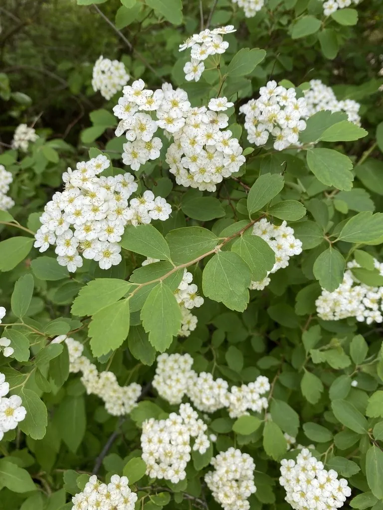

灌木与花木 · 植物界
菱叶绣线菊 Spiraea vanhouttei

蔷薇科落叶灌木，春季开白色伞形花序，枝条拱垂如瀑布，花量极大，是北方庭院常见的优良春季花木。
- 分类
- 门被子植物门纲木兰纲目蔷薇目科蔷薇科属绣线菊属
- 栖息环境
- 庭院、花篱与草坪边缘，喜光耐寒
- 地理分布
- 中国各地园林栽培；为园艺杂交种
- 保护级别
- 暂无评估；栽培杂交种，未见野生居群
物种志
菱叶绣线菊为蔷薇科绣线菊属落叶灌木，高 1–2 米，枝条细长、拱形下垂，幼枝红褐色。叶互生，菱状卵形至倒卵形，边缘具缺刻状锯齿。伞形花序生于细枝上，花小，白色，花量极大，花期 4–5 月；果实为蓇葖果，果期 7–8 月。
菱叶绣线菊是绣线菊属的杂交种，亲本为麻叶绣线菊与三裂绣线菊，中国各地园林广泛栽培。它喜光，也耐半阴，耐寒、耐旱，适宜疏松肥沃、排水良好的土壤。春季白花满枝，枝条拱垂如瀑布，是北方庭院、花篱与草坪边缘常见的春季花木；秋季叶色转黄，也有观赏价值。栽培以扦插和分株繁殖为主，花后修剪可保持株形优美，并促进来年花枝发育。
形态与习性
- 株高1–2 米，枝条拱形下垂
- 花期4–5 月，白色伞形花序
- 果期7–8 月，蓇葖果
- 光照喜光，也耐半阴
- 水分耐旱，忌积水
- 土壤疏松肥沃、排水良好的壤土
- 主要用途春季观花、花篱与庭院点缀
趣味知识
- 菱叶绣线菊是麻叶绣线菊与三裂绣线菊的杂交种。
- 春季白花满枝，枝条拱垂，远看像一条白色瀑布。
- 它的花量极大，是北方庭院重要的春季花木。
- 秋季叶片转黄，兼具观花与观叶价值。